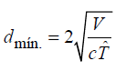

Bienvenid@ a Acustic-Lab, una herramienta online con la que podrás realizar tus comprobaciones en tiempo real.
Cuenta con tres herramientas principales:
Con ella, podrás calcular de la distancia mínima a la que deben situarse la fuente y el micrófono para realizar una medición. Adicionalmente podrás comprobar si la posición desde la que vas a realizar la medición es correcta o no. Esta herramienta ha sido diseñada cumpliendo la normativa UNE-ISO 3382. Los datos necesarios para estos cálculos serán los siguientes:
Dadas las dimensiones de la sala, en este apartado se sugerirá, de forma aleatoria, una terna de puntos para realizar las mediciones del tiempo de reverberación cumpliendo con la distancia mínima.
Se obtendrán 4 posiciones diferentes de la fuente con 3 posiciones posibles en las que colocar los micrófonos. Las dimensiones mínimas que acepta el recinto son de 5x5x5 m. Esta herramienta ha sido diseñada cumpliendo la normativa UNE-ISO 3382.
Con ella, podemos calcular de una manera estimada del tiempo de reverberación de la sala, según la Teoría de Sabine y la Teoría de Eyring. Este cálculo se podrá realizar para una frecuencia determinada o para el conjunto de bandas de octava comprendido entre los 125Hz hasta los 4000Hz. Se necesitarán datos tales como:
Además, se cuenta con una herramienta adicional a modo de base de datos, en la que se podrán obtener materiales en funición del coeficiente medio de absorción:
Por favor, introduzca las dimensiones del recinto en metros. Una vez realizado, presione el botón "Guardar dimensiones" para establecerlas.
Esta sección aplica la Normativa UNE-ISO 3382.
Se pretende proveer de una herramienta para calcular la distancia mínima a la que deben situarse el micrófono de la fuente sonora. Además advierte de si la distancia a la que se ha sutuado el micrófono cumple o no esta distancia.
Siguiendo la normativa dispuesta, la distancia mínima fuente-micrófono es la descrita por la siguiente fórmula:
Sugiere una serie de puntos de medición en la cuales colocar la fuente sonora y el micrófono cumpliendo con los criterios de distancia mínima. El usuario podrá escoger entre la terna dada según la precisión que desee.
Recuerde que las dimensiones mínimas del recinto deben ser de 5x5x5 m para realizar el cálculo.
A través de esta herramienta se podrá calcular el tiempo de reverberación de la sala en una frecuencia determinada o en las bandas de octava comprendidas entre 125Hz y 4000Hz.
El resultado obtenido será el tiempo de reverberación mediante la utilización de las fŕmulas de Sabine y de Eyring.
Además el cálculo en bandas de octava contará con una tabla y una gráfica que indicará el tiempo de reverberación por frecuencia.
| 125Hz | 250Hz | 500Hz | 1000Hz | 2000Hz | 4000Hz | |
|---|---|---|---|---|---|---|
| Paredes | ||||||
| Techo | ||||||
| Suelo |
Consulta diferentes materiales para el traramiento acústico en recintos. Se pueden realizar búsquedas en función del coeficiente de absorción sonora medio o por el nombre del material.
| MATERIAL | mm | dens | 125 | 250 | 500 | 1000 | 2000 | 4000 | NRC |
|---|---|---|---|---|---|---|---|---|---|
| Alfombra sobre pared | 10 | 0.09 | 0.08 | 0.21 | 0.27 | 0.27 | 0.37 | 0.21 | |
| Corcho en baldosas contra respaldo solido | 22 | 0.05 | 0.10 | 0.20 | 0.55 | 0.60 | 0.55 | 0.38 | |
| Revestimiento de corcho | 20 | 5.6 | 0.12 | 0.27 | 0.72 | 0.79 | 0.76 | 0.77 | 0.64 |
| Tejido de terciopelo 340, liso contra pared | 0.3 | 0.03 | 0.04 | 0.11 | 0.17 | 0.24 | 0.35 | 0.14 | |
| Tejido de algodón 360, exento | 0.4 | 0.03 | 0.04 | 0.11 | 0.17 | 0.24 | 0.35 | 0.14 | |
| Cortinas, tejido delgado | 0.04 | 0.05 | 0.11 | 0.18 | 0.30 | 0.35 | 0.16 | ||
| Terciopelo mediano, liso ante pared | 0.05 | 0.10 | 0.15 | 0.20 | 0.25 | 0.30 | 0.17 | ||
| Tejido de algodón 500, exento | 0.5 | 0.04 | 0.07 | 0.13 | 0.22 | 0.33 | 0.35 | 0.19 | |
| Cortinas, tejido mediano | 0.05 | 0.07 | 0.13 | 0.22 | 0.32 | 0.35 | 0.19 | ||
| Tejido de terciopelo 650, exento | 0.6 | 0.05 | 0.12 | 0.35 | 0.45 | 0.38 | 0.36 | 0.33 | |
| Cortinas, tejido espeso | 0.05 | 0.12 | 0.35 | 0.48 | 0.38 | 0.36 | 0.33 | ||
| Tejido de terciopelo a 1.00m de la pared | 0.08 | 0.29 | 0.44 | 0.50 | 0.40 | 0.35 | 0.41 | ||
| Tejido de algodón 500, plegado al 75% | 0.5 | 0.04 | 0.23 | 0.40 | 0.54 | 0.53 | 0.40 | 0.43 | |
| Terciopelo mediano, al 50% ante pared | 0.05 | 0.25 | 0.40 | 0.50 | 0.60 | 0.50 | 0.44 | ||
| Tejido de terciopelo 475, plegado 50% | 0.5 | 0.07 | 0.31 | 0.49 | 0.75 | 0.70 | 0.60 | 0.56 | |
| Terciopelo fruncido | 1.2 | 0.07 | 0.31 | 0.49 | 0.81 | 0.66 | 0.44 | 0.57 | |
| Tejido de algodón 500, plegado al 50% | 0.5 | 0.07 | 0.37 | 0.49 | 0.81 | 0.65 | 0.54 | 0.58 | |
| Tejido de terciopelo 600, plegado al 50% | 0.6 | 0.14 | 0.35 | 0.55 | 0.72 | 0.70 | 0.65 | 0.58 | |
| Fibra de madera | 38 | 19.0 | 0.10 | 0.19 | 0.40 | 0.79 | 0.55 | 0.77 | 0.48 |
| Fibra de madera | 50 | 25.0 | 0.04 | 0.24 | 0.54 | 0.88 | 0.53 | 0.70 | 0.55 |
| Hormigón revocado | 0.00 | 0.00 | 0.00 | 0.01 | 0.01 | 0.01 | 0.01 | ||
| Hormigón bloques pintados | 0.10 | 0.09 | 0.08 | 0.09 | 0.10 | 0.04 | 0.09 | ||
| Hormigón bloques pintados | 0.11 | 0.08 | 0.07 | 0.06 | 0.05 | 0.05 | 0.07 | ||
| Ladrillo visto pintado | 0.01 | 0.01 | 0.02 | 0.02 | 0.02 | 0.03 | 0.02 | ||
| Ladrillo pintado | 0.01 | 0.01 | 0.02 | 0.02 | 0.02 | 0.03 | 0.02 | ||
| Ladrillo pintado | 0.01 | 0.01 | 0.02 | 0.02 | 0.02 | 0.03 | 0.02 | ||
| Ladrillo revocado y hendido | 0.01 | 0.01 | 0.02 | 0.03 | 0.04 | 0.05 | 0.03 | ||
| Ladrillo visto | 0.02 | 0.03 | 0.03 | 0.04 | 0.05 | 0.07 | 0.04 | ||
| Ladrillo visto o pintado | 0.05 | 0.04 | 0.02 | 0.04 | 0.05 | 0.05 | 0.04 | ||
| Placas de aglomerado (16+30 mm de aire) | 46 | 0.25 | 0.07 | 0.02 | 0.02 | 0.02 | 0.02 | 0.03 | |
| Placas de aglomerado (25+30 mm de aire) | 55 | 0.20 | 0.05 | 0.02 | 0.02 | 0.02 | 0.02 | 0.03 | |
| Placas de aglomerado (25+30 mm de lana vidrio) | 55 | 0.20 | 0.05 | 0.02 | 0.02 | 0.02 | 0.02 | 0.03 | |
| Placas de aglomerado (16+30 mm de lana vidrio) | 46 | 0.40 | 0.10 | 0.02 | 0.02 | 0.02 | 0.02 | 0.04 | |
| Placas de aglomerado (8+30 mm de aire) | 38 | 0.25 | 0.20 | 0.04 | 0.04 | 0.04 | 0.04 | 0.08 | |
| Madera compensada sin c˙mara | 0.05 | 0.06 | 0.06 | 0.10 | 0.10 | 0.10 | 0.08 | ||
| Revestimiento de madera | 65 | 0.10 | 0.11 | 0.10 | 0.08 | 0.08 | 0.11 | 0.09 | |
| Paneles de madera (18+40 mm de aire) | 58 | 0.10 | 0.10 | 0.10 | 0.08 | 0.08 | 0.07 | 0.09 | |
| Placas de aglomerado (8+30 mm de lana de vidrio) | 38 | 0.40 | 0.25 | 0.04 | 0.04 | 0.04 | 0.04 | 0.09 | |
| Paneles 25 mm sobre espacio de aire | 0.19 | 0.14 | 0.09 | 0.06 | 0.06 | 0.05 | 0.09 | ||
| Paneles de madera (16+40 mm de aire) | 56 | 0.20 | 0.12 | 0.10 | 0.10 | 0.08 | 0.07 | 0.10 | |
| Paneles de contrachapado (6+50 mm de aire) | 56 | 0.20 | 0.30 | 0.12 | 0.07 | 0.04 | 0.04 | 0.13 | |
| Paneles sobre c˙mara aire (3+25 mm) | 28 | 0.30 | 0.20 | 0.15 | 0.10 | 0.10 | 0.05 | 0.14 | |
| Paneles sobre material poroso (3+25 mm) | 28 | 0.40 | 0.25 | 0.15 | 0.10 | 0.10 | 0.05 | 0.15 | |
| Paneles de contrachapado (6+50 mm de lana de vidrio) | 56 | 0.60 | 0.40 | 0.13 | 0.07 | 0.04 | 0.04 | 0.16 | |
| Revestimiento de madera | 53 | 0.25 | 0.34 | 0.18 | 0.10 | 0.10 | 0.06 | 0.18 | |
| Revestimiento de madera | 56 | 0.25 | 0.34 | 0.18 | 0.10 | 0.10 | 0.18 | ||
| Paneles de contrachapado (5+50 mm de lana de vidrio) | 55 | 0.47 | 0.34 | 0.30 | 0.11 | 0.08 | 0.08 | 0.21 | |
| Paneles de contrachapado delgado | 0.42 | 0.21 | 0.10 | 0.08 | 0.06 | 0.06 | 0.23 | ||
| Placas de fibromadera con fieltro bituminoso y c˙mara | 60 | 0.90 | 0.45 | 0.25 | 0.15 | 0.10 | 0.10 | 0.24 | |
| Paneles de contrachapado (6+50 mm de lana de vidrio) | 56 | 0.60 | 0.42 | 0.35 | 0.12 | 0.08 | 0.08 | 0.24 | |
| Revestimiento de madera | 53 | 0.61 | 0.65 | 0.24 | 0.12 | 0.10 | 0.06 | 0.28 | |
| Panel perforado 5% sobre manto poroso 50mm | 53 | 0.20 | 0.40 | 0.75 | 0.60 | 0.40 | 0.30 | 0.54 | |
| Panel perforado 5% sobre planchas poroso 50mm | 53 | 0.25 | 0.45 | 0.75 | 0.60 | 0.40 | 0.30 | 0.55 | |
| Panel perforado +20% sobre manto poroso 50mm | 53 | 0.20 | 0.35 | 0.65 | 0.80 | 0.90 | 0.90 | 0.67 | |
| Panel perforado 10% sobre manto poroso 50mm | 53 | 0.20 | 0.35 | 0.65 | 0.85 | 0.85 | 0.75 | 0.67 | |
| Panel perforado 10% sobre planchas poroso 50mm | 53 | 0.25 | 0.40 | 0.75 | 0.85 | 0.80 | 0.75 | 0.70 | |
| Malla perforado +30% sobre manto poroso 50mm | 76 | 0.35 | 0.70 | 0.90 | 0.90 | 0.95 | 0.90 | 0.86 | |
| Fieltro bituminoso doble Sobre c˙mara de aire | 260 | 0.50 | 0.30 | 0.20 | 0.10 | 0.10 | 0.10 | 0.18 | |
| Panel rgido RP25 Isover | 25 | 35.0 | 0.20 | 0.40 | 0.80 | 0.90 | 1.00 | 1.00 | 0.78 |
| Panel rgido RP50 Isover | 50 | 35.0 | 0.30 | 0.75 | 1.00 | 1.00 | 1.00 | 1.00 | 0.94 |
| Marmol | 0.01 | 0.01 | 0.01 | 0.02 | 0.02 | 0.01 | 0.02 | ||
| Muro de sillares de piedra | 0.02 | 0.02 | 0.02 | 0.03 | 0.04 | 0.04 | 0.02 | ||
| Pared revocada | 0.01 | 0.01 | 0.02 | 0.02 | 0.02 | 0.04 | 0.02 | ||
| Revoque de cal | 0.03 | 0.03 | 0.03 | 0.03 | 0.04 | 0.07 | 0.03 | ||
| Revoque sobre respaldo s˝lido | 0.03 | 0.03 | 0.02 | 0.03 | 0.04 | 0.05 | 0.04 | ||
| Revoque rugoso | 0.03 | 0.03 | 0.06 | 0.08 | 0.04 | 0.06 | 0.05 | ||
| Revoque de cemento | 0.03 | 0.03 | 0.06 | 0.09 | 0.04 | 0.06 | 0.05 | ||
| Revoque de cal y arena | 20 | 0.04 | 0.05 | 0.06 | 0.08 | 0.04 | 0.06 | 0.06 | |
| Placas pintadas de fibra 12mm contra pared | 12 | 0.05 | 0.10 | 0.10 | 0.10 | 0.10 | 0.15 | 0.10 | |
| Placas pintadas de fibra sobre c˙mara (12+25mm) | 37 | 0.30 | 0.20 | 0.15 | 0.10 | 0.10 | 0.15 | 0.14 | |
| Placas de fibra 12mm contra pared | 12 | 0.05 | 0.10 | 0.15 | 0.25 | 0.30 | 0.30 | 0.20 | |
| Placas de fibra sobre c˙mara (12+25mm) | 37 | 0.30 | 0.25 | 0.30 | 0.30 | 0.30 | 0.30 | 0.29 | |
| Vidrio de espejo | 0.04 | 0.03 | 0.02 | 0.01 | 0.07 | 0.04 | 0.03 | ||
| Placas de yeso (13+100 mm de aire) | 113 | 0.10 | 0.10 | 0.04 | 0.02 | 0.02 | 0.02 | 0.05 | |
| Placas de yeso (10+50 mm de aire) | 60 | 0.32 | 0.07 | 0.05 | 0.05 | 0.02 | 0.02 | 0.05 | |
| Pared de placas de yeso (13+65+13 mm) | 90 | 0.30 | 0.09 | 0.04 | 0.05 | 0.04 | 0.03 | 0.06 | |
| Pared de placas de yeso (13+65+13 mm con relleno) | 90 | 0.31 | 0.07 | 0.04 | 0.06 | 0.05 | 0.03 | 0.06 | |
| Placas de yeso (13+30 mm lana de vidrio) | 43 | 0.50 | 0.20 | 0.05 | 0.02 | 0.02 | 0.02 | 0.07 | |
| Placas de yeso (13+30 mm de aire) | 43 | 0.30 | 0.20 | 0.05 | 0.02 | 0.02 | 0.02 | 0.07 | |
| Placas de yeso 13 mm sobre parantes | 0.29 | 0.10 | 0.05 | 0.04 | 0.07 | 0.09 | 0.07 | ||
| Placas de yeso (13+100 mm lana de vidrio) | 113 | 0.30 | 0.12 | 0.08 | 0.06 | 0.06 | 0.03 | 0.08 | |
| Pared de placas de yeso (13+90+13 mm con relleno) | 115 | 0.17 | 0.07 | 0.09 | 0.09 | 0.07 | 0.06 | 0.08 | |
| Placas de yeso (10+50 mm lana de vidrio) | 60 | 0.35 | 0.12 | 0.08 | 0.07 | 0.05 | 0.02 | 0.08 | |
| Doble placa de yeso 2 x 16 | 32 | 0.28 | 0.12 | 0.10 | 0.17 | 0.13 | 0.09 | 0.13 |